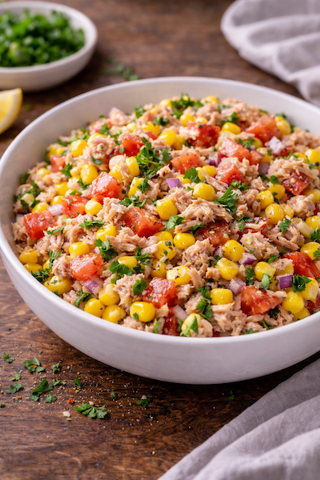

Pourquoi faire une salade thon maïs rapide ?
- ✅ Recette rapide du soir prête en 10 minutes
- ✅ Ingrédients simples du placard
- ✅ Repas léger et équilibré
- ✅ Idéal en été ou quand on manque de temps
Ingrédients (2 personnes)
Préparation (10 minutes)
- Égoutte le thon et le maïs.
- Coupe la tomate en dés.
- Émince finement l’oignon rouge.
- Mélange tous les ingrédients dans un saladier.
- Ajoute huile + citron + sel + poivre.
- Mélange bien et sers frais.
Astuces pour une salade encore meilleure
- 🥑 Ajoute de l’avocat pour plus d’onctuosité.
- 🥚 Ajoute un œuf dur pour plus de protéines.
- 🌿 Ajoute du persil ou de la coriandre fraîche.
- 🧀 Ajoute de la feta pour une version méditerranéenne.
Variantes rapides
- Salade thon maïs pâtes (version plus complète)
- Salade thon riz express
- Salade thon avocat citron
- Version healthy : sans huile, juste citron
FAQ – Salade thon maïs rapide
Peut-on préparer la salade à l’avance ?
Oui, elle se conserve 24h au réfrigérateur.
Quel thon utiliser ?
Thon au naturel de préférence. Le thon à l’huile fonctionne aussi.
Peut-on en faire un repas complet ?
Ajoute du riz, des pâtes ou un œuf dur pour un plat plus consistant.
À lire aussi
Wrap poulet rapide |
Quesadilla fromage rapide |
Recettes rapides faciles
: 25 idées.